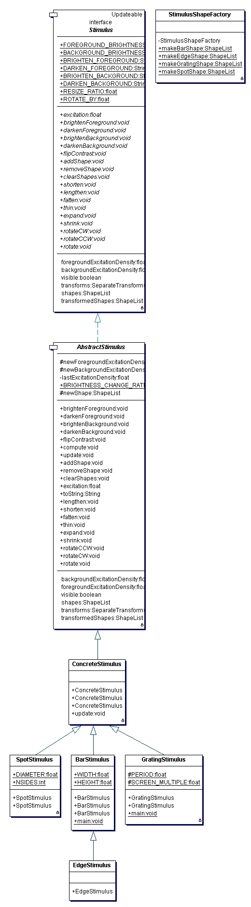

ShapeList
is {@link ch.unizh.ini.friend.graphics.Transformable}, which means that is
can be transformed in a number of different ways as a whole.
In the {@link ch.unizh.ini.friend.stimulus.Stimulus}, (more concretely,
an instantiaion of {@link ch.unizh.ini.friend.stimulus.ConcreteStimulus}),
the Transformable ShapeList is
wrapped up in a {@link ch.unizh.ini.friend.graphics.SeparateTransforms}. The transforms are actually an instance of
{@link ch.unizh.ini.friend.graphics.ConcreteSeparateTransforms}, wrapped inside a synchronizer
{@link ch.unizh.ini.friend.graphics.SynchronizedSeparateTransforms}.
These transforms, along with the shapes, specify the actual shape of the
stimulus displayed on the {@link ch.unizh.ini.friend.gui.TangentScreen} and used to compute the {@link ch.unizh.ini.friend.simulation.cells.Photoreceptor}
responses. In fact the Stimulus must be given to the Photoreceptor on construction so that the Photoreceptor
knows how to compute its response to the Stimulus.
Concrete stimuli can be built using the static methods in {@link ch.unizh.ini.friend.stimulus.StimulusShapeFactory}.
Because the stimulus is given to the photoreceptors on their construction, it is not easily possible to change it after the simulation is constructed. Instead, to change the shape of the stimulus, you can change the geometry of the stimulus, e.g.:
ShapeList newShapes=StimulusShapeFactory.makeBarShape();
stimulus.getTransforms().setGeometry(newShapes);
Here is the UML diagram for this package:
